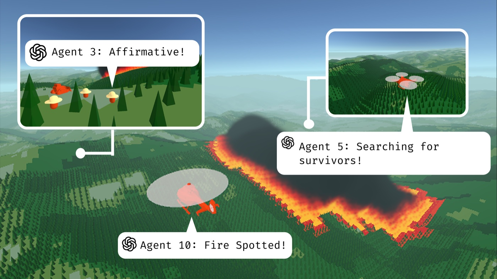
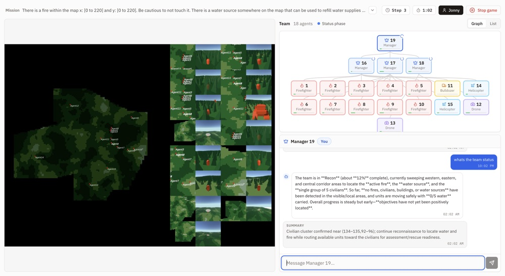
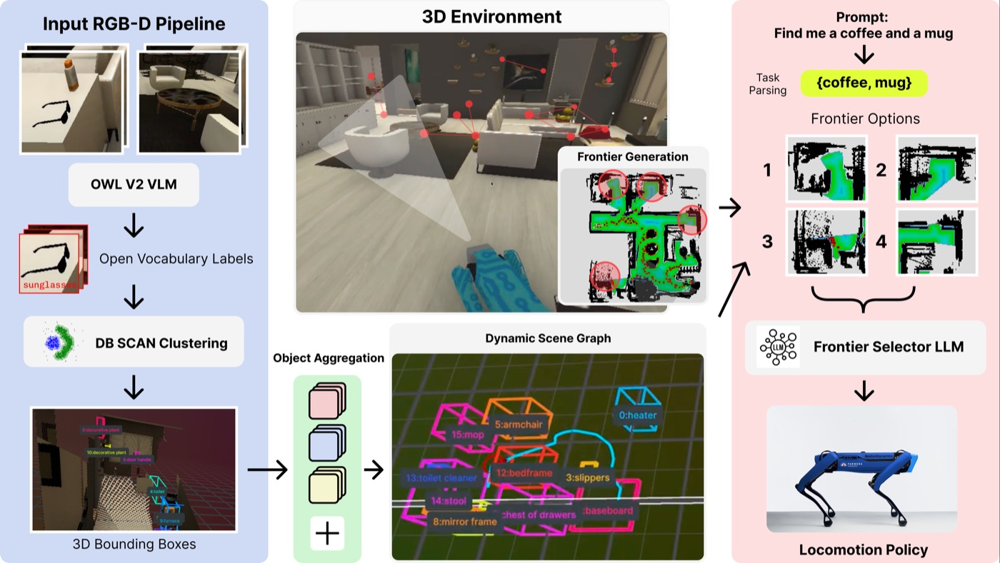
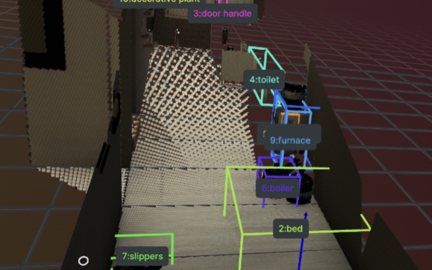

Jonathan Hyun · Duke University · General Robotics Lab
I build agentic AI systems that scale to thousands of LLM agents, and ship them as real products.
CS and Math senior at Duke (May 2027) and researcher at the Duke General Robotics Lab, advised by Prof. Boyuan Chen. I created CREW-WILDFIRE end to end, from simulator and distributed infrastructure to a TMLR 2025 benchmark and a live web app where humans and AI agents fight fires together. I have also shipped production software at MIT Lincoln Laboratory and as co-founder of Pulse LLC. U.S. citizen with a full U.S. government security clearance.
Featured · CREW-WILDFIRE
Built end to end, 2024 – presentA large-scale multi-agent system for LLM agents, from simulator to deployed product
Procedurally generated wildfire worlds where up to 2,000+ LLM agents and human players scout, contain fires, and rescue civilians together. Playable at crew-wildfire.com.
- Environment & infrastructure. Unity simulation on distributed Docker and gRPC, from a handful of agents to 2,000+.
- Benchmark. Five multi-LLM agentic algorithms under partial observability and stochastic dynamics; extended by ORCH.
- WILDFIRE-ORCH app. Humans team with ORCH agents in the browser: React, WebSockets, AWS microservices, OpenAI or self-hosted vLLM.
- 2,000+LLM agents per run
- 5algorithms benchmarked
- TMLR 2025first author


Featured · TIAMAT Scene-Graph Exploration
DARPA DRC 2025 · first-author paperOnline dynamic scene graphs that tell a robot where to explore next
My first-author paper from Duke's DARPA TIAMAT entry (ME555 Robot Learning). A Boston Dynamics Spot builds a 3D scene graph on the fly from streaming RGB-D and uses it to pick exploration frontiers for open-ended natural-language tasks, indoors and outdoors, with no prior map.
- Online scene graph. OWLv2 open-vocabulary detections from five cameras, DBSCAN clustering into 3D boxes, cross-frame tracking with geometric, voxel, and embedding similarity, and LLM-verified spatial relations.
- Task-driven exploration. A task parser turns instructions like "find shelter from the rain" into object queries; an LLM frontier selector reasons over the partial graph to choose where to go.
- Sim to real. Developed across Habitat, MuJoCo, and Isaac Sim, then deployed on Spot through ROS 2.


More projects
-
DOJO Framework
CodeC++/PyTorch/CUDA framework for human-in-the-loop reinforcement learning: 50+ robots, 10 algorithms (PPO, DQN, DDPG, SAC, GUIDE, COACH).
-
Pulse
Video-feedback platform used by 500+ Duke MD students; RAG on ChromaDB generates LLM-tailored feedback. I co-founded it and built the full stack.
-
MiniAmazon
Full-stack marketplace: 20+ Flask APIs, normalized Postgres schema, CI/CD, 1000+ products.
-
CampusETA
HackDuke iOS app for on-demand public-transit ETAs.
Experience
Full resume- MIT Lincoln Laboratory · Lexington, MASoftware Engineering Intern, AI/ML Engineering InternApr 2026 – present
- Duke General Robotics Laboratory · Durham, NCAI Researcher, First Author, Undergraduate MentorFeb 2024 – present
- Pulse LLC · Durham, NCCo-founder, Full Stack DeveloperMay 2024 – Jan 2026
- Talk Hiring · RemoteSoftware Engineering Intern, Front-End DeveloperJan – Aug 2023
Lab & Mentorship
I am a member of the General Robotics Lab at Duke University, advised by Prof. Boyuan Chen, and I have mentored undergraduates in the lab since 2024.